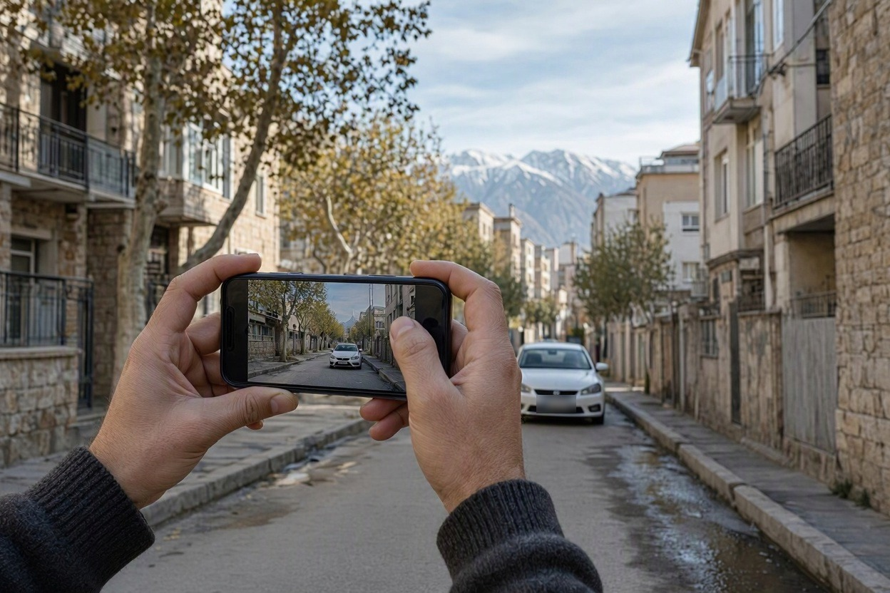
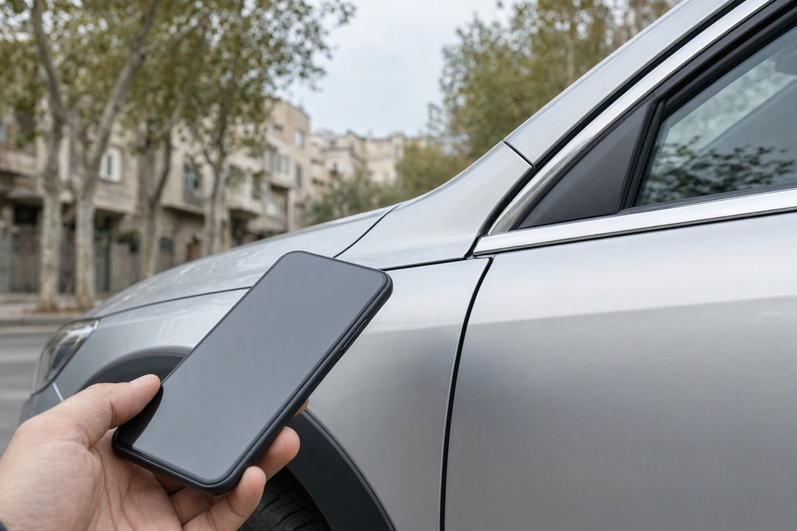
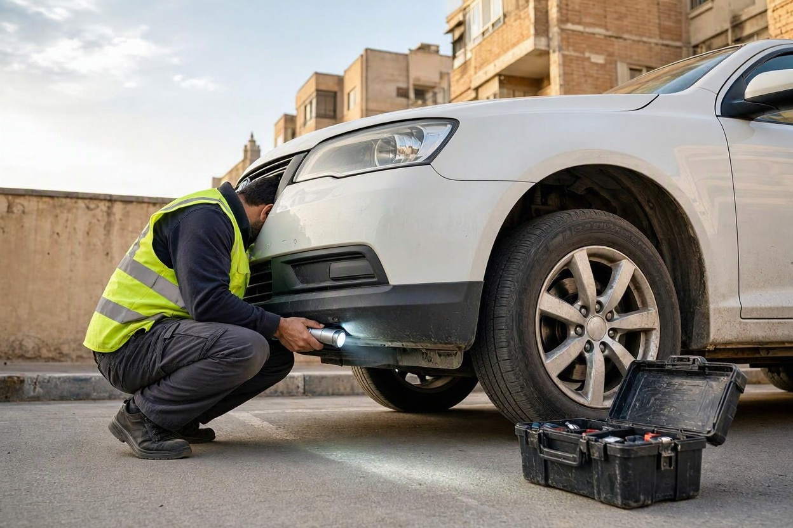
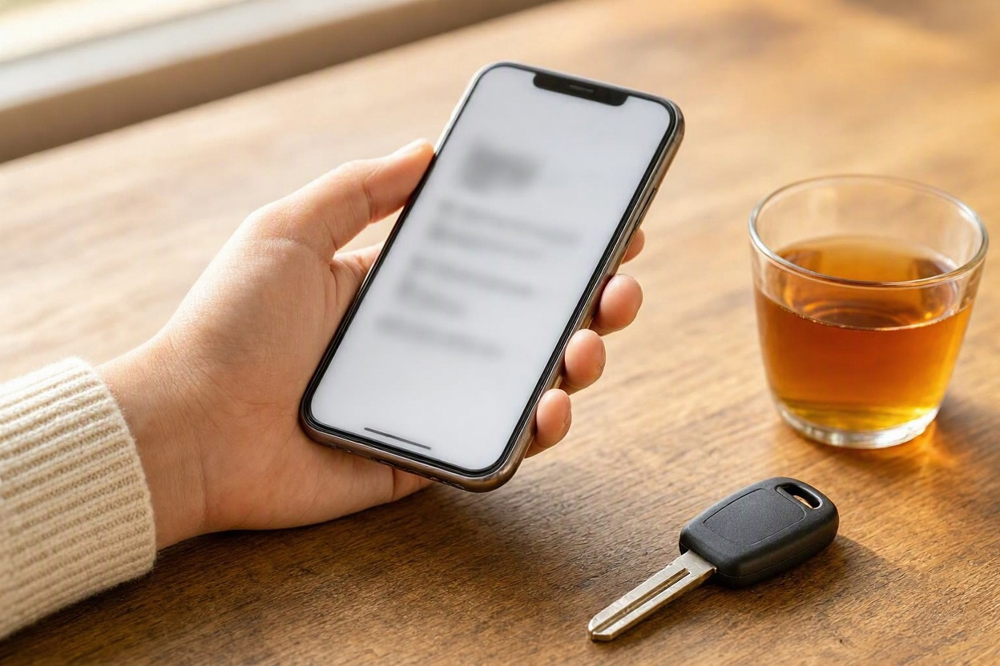
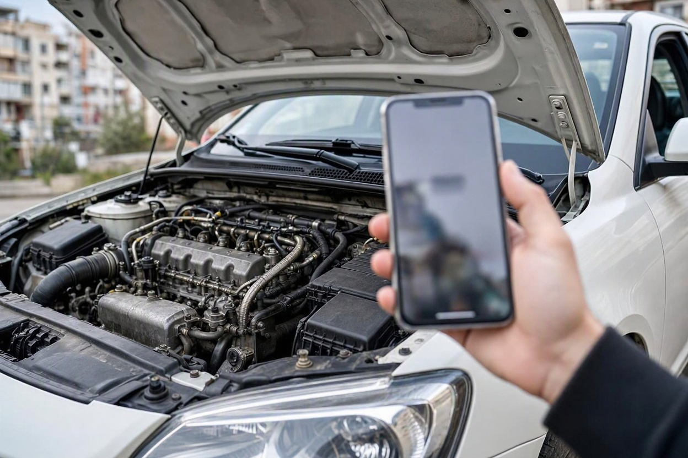

کارشناسی آنلاین خودرو؛ رزرو اینترنتی یا از روی عکس و ویدیو؟
یک خودرو در آگهی دیدهاید که قیمتش خوب است، اما محل فروشنده آن سر شهر است یا اصلاً در شهر دیگری. فروشنده پیشنهاد میدهد چند عکس و یک ویدیو بفرستد. حالا این سؤال پیش میآید: اگر همینها را برای یک کارشناس بفرستم، خیالم از خودرو راحت میشود؟
عبارت کارشناسی آنلاین خودرو در بازار به دو کار کاملاً متفاوت گفته میشود و همین تشابه اسمی میتواند خریدار را به اشتباه بیندازد. در این راهنمای کارشناسی خودرو کارماچک هر دو را جدا میکنیم، توضیح میدهیم از عکس و ویدیو چه چیزی میشود فهمید و چه زمانی بدون دیدن خودرو نباید تصمیم گرفت.
کارشناسی آنلاین خودرو یا یعنی رزرو اینترنتی کارشناسی که حضوری خودرو را میبیند، یا اظهارنظر از روی عکس و ویدیو. برای تصمیم خرید، فقط روش حضوری قابل اتکاست، چون ضخامت رنگ، شاسی، دیاگ و تست رانندگی از راه دور سنجیده نمیشوند. عکس و ویدیو بیشتر به درد غربال اولیه و حذف گزینههای مشکوک میخورند.
خلاصه در یک دقیقه
- «آنلاین» در رزرو اینترنتی فقط به ثبت درخواست مربوط است؛ خود بررسی همچنان کنار خودرو انجام میشود.
- نظر از روی عکس و ویدیو یک برداشت اولیه است، نه گزارش کارشناسی.
- عکس و ویدیو را معمولاً فروشنده میگیرد، پس زاویه، نور و بخشهایی که دیده میشوند دست اوست.
- تماس تصویری زنده از ویدیوی ضبطشده بهتر است، چون شما تعیین میکنید کجا نشان داده شود.
- اگر خودرو از غربال اولیه گذشت، پیش از پرداخت بیعانه نوبت بررسی حضوری است.
کارشناسی آنلاین خودرو دقیقا یعنی چه؟
این عبارت دو معنای رایج دارد. پیش از هر پرداختی بپرسید منظور طرف مقابل کدام است، چون نتیجهی این دو با هم قابل مقایسه نیست.
رزرو اینترنتی کارشناسی یعنی درخواست را از سایت یا اپلیکیشن ثبت میکنید، زمان و محل هماهنگ میشود و کارشناس با ابزار، خودرو را حضوری بررسی میکند. تنها بخش آنلاین این روش، ثبت سفارش و گاهی دریافت گزارش است.
کارشناسی از راه دور یعنی فردی با دیدن عکس، ویدیو یا تماس تصویری نظر میدهد، بدون اینکه خودرو را لمس یا اندازهگیری کند. نتیجهی این کار یک برداشت است و بهتر است آن را «مشاورهی اولیه» بدانید، نه کارشناسی.
رزرو اینترنتی با کارشناسی از روی عکس چه فرقی دارد؟
تفاوت اصلی در این است که چه کسی خودرو را میبیند و چه چیزی واقعاً اندازهگیری میشود. این جدول دو روش را کنار هم میگذارد:
| موضوع | رزرو اینترنتی و بررسی حضوری | نظر از روی عکس و ویدیو |
|---|---|---|
| چه کسی خودرو را میبیند؟ | کارشناس، کنار خودرو | فقط دوربین فروشنده یا خریدار |
| سنجش رنگ | ضخامتسنج روی تکتک قطعات | فقط اختلاف رنگ یا موج آشکار |
| شاسی و سینیها | بازدید مستقیم جوش، درز و چسب | در بهترین حالت یک نمای کلی |
| موتور و گیربکس | دیاگ، تست رانندگی و بازدید نشتی | صدای ضبطشده و چراغهای پشت آمپر |
| کاربرد مناسب | تصمیم نهایی پیش از معامله | غربال اولیهی چند آگهی |
از روی عکس و ویدیو چه چیزی را می شود فهمید؟
عکس و ویدیوی باکیفیت میتواند چند نشانه را آشکار کند و همین برای کنار گذاشتن بعضی آگهیها کافی است. هیچکدام از این نشانهها بهتنهایی تشخیص قطعی نیست و نبودشان هم سلامت خودرو را ثابت نمیکند.

- درزهای بدنه: فاصلهی نامتقارن کاپوت، درها یا گلگیرها میتواند نشانهی ترمیم باشد.
- اختلاف رنگ و موج: زیر نور روز و از زاویهی کناری، بعضی رنگشدگیهای آشکار دیده میشوند.
- فرسودگی کابین: فرمان، پدال و صندلی بسیار فرسوده کنار کارکرد پایین، جای سؤال دارد.
- چراغهای پشت آمپر: چراغ هشداری که بعد از روشن شدن موتور خاموش نمیشود، در ویدیو قابل دیدن است.
- لاستیکها: سایش نامنظم میتواند به جلوبندی یا تنظیم فرمان مربوط باشد.
- صدا و دود استارت: روشن شدن موتور سرد چیزهایی را نشان میدهد، اما میکروفون تلفن همراه برای قضاوت دربارهی صدای موتور دقیق نیست.
چه چیزهایی از راه دور دیده نمی شوند؟
بیشترین هزینههای پنهان خودرو دقیقاً در بخشهایی هستند که دوربین به آنها نمیرسد. سه دسته اطلاعات از راه دور به دست نمیآید: اندازهگیریها، رفتار خودرو در حرکت و هر چیزی که فروشنده نشان ندهد.
- ضخامت رنگ و بتونه: رنگشدگی خوب و بتونهی زیر آن با چشم، چه برسد به دوربین، همیشه قابل تشخیص نیست.
- شاسی و سینیها: جای جوش، کشش و چسب غیرکارخانهای بازدید نزدیک با نور میخواهد.
- خطاهای الکترونیکی: بدون اتصال دیاگ نمیدانید چه خطاهایی ثبت یا پاک شدهاند.
- گیربکس، جلوبندی و ترمز: ضربهی تعویض دنده، لرزش فرمان و کشیدن به یک سمت فقط در تست رانندگی معلوم میشوند.

اعتبار خود تصویر هم مسئله است. عکس ممکن است قدیمی باشد، بعد از کارواش و زیر نور خاص گرفته شده باشد، یا کیفیتش در پیامرسان افت کرده باشد. فیلتر و فشردهسازی همان موجها و اختلاف رنگهایی را که دنبالشان هستید، محو میکنند.
نظر اولیه را با بررسی حضوری تکمیل کنید
اگر خودرو از غربال اولیه گذشته است، بررسی فنی، رنگ و شاسی کنار خودرو ابهامهایی را روشن میکند که دوربین نشان نمیدهد.
ثبت درخواست کارشناسیرزرو اینترنتی کارشناسی را چطور درست انجام دهیم؟
رزرو اینترنتی زمانی به نتیجهی خوب میرسد که پیش از ثبت، چند موضوع با فروشنده و مجموعهی کارشناسی روشن شده باشد. این مراحل برای هر سفارش بررسی کامل خودرو پیش از معامله کاربرد دارد.

- رضایت فروشنده را بگیرید:پیش از رزرو بپرسید آیا با آمدن کارشناس و تست رانندگی مشکلی ندارد. این سؤال خودش یک غربال است.
- مشخصات دقیق را وارد کنید:مدل، سال، تیپ و آدرس دقیق خودرو را بدهید تا زمان و هزینهی اعلامی به واقعیت نزدیک باشد.
- دامنهی بررسی را بپرسید:مشخص کنید فنی، دیاگ، رنگ و شاسی همگی در گزارش میآیند یا فقط بخشی از آنها.
- زمان مناسب انتخاب کنید:نور روز و جایی با امکان تست رانندگی، دقت بررسی بدنه و فنی را بالا میبرد. موتور هم بهتر است پیش از رسیدن کارشناس روشن نشده باشد.
- گزارش مکتوب بخواهید:گزارش باید به همان خودرو مرتبط باشد و نتیجهی هر بخش را جدا بگوید.
بررسی در محل هم محدودیتهای خودش را دارد و مثلاً بدون جک و بالابر، دید کامل به زیر خودرو همیشه ممکن نیست. این موارد را در مطلب دقت و محدودیت های کارشناسی خودرو در محل جداگانه توضیح دادهایم.
از فروشنده چه ویدیویی بخواهیم؟
تماس تصویری زنده بهترین گزینه است، چون میتوانید بگویید دوربین کجا برود و ضبط قدیمی هم به شما داده نمیشود. اگر تماس ممکن نبود، این فهرست را برای ویدیوی بدون برش بفرستید:

- یک دور کامل دور خودرو، زیر نور روز و با فاصلهی نزدیک به بدنه.
- درزهای کاپوت، درها و درب صندوق از نمای نزدیک.
- روشن شدن موتور در حالت سرد، همراه با نمای اگزوز و صفحهی آمپر.
- نمای کامل موتورخانه و کف صندوق، با فرش برداشتهشده.
- هر چهار لاستیک و کارکرد نمایش دادهشده روی صفحهی آمپر.
- مدارک خودرو با پوشاندن اطلاعات شخصی، برای تطبیق مدل و سال.
فروشندهای که بهجای اینها فقط چند عکس زیبا میفرستد، الزاماً پنهانکاری نمیکند، اما شما هم هنوز اطلاعات کافی ندارید. این تفاوت را در تصمیم رفتن یا نرفتن به بازدید لحاظ کنید.
کدام وعده ها در کارشناسی از راه دور مشکوک هستند؟
هر ادعایی که فراتر از توان دوربین باشد، باید محل تردید شما باشد. این جملهها معمولاً یعنی طرف مقابل محدودیت کارش را توضیح نمیدهد:
- «از روی عکس میگوییم خودرو بیرنگ است یا نه»؛ نبود نشانه در عکس، بیرنگ بودن را ثابت نمیکند.
- «با همین ویدیو سلامت موتور و گیربکس را تأیید میکنیم»؛ بدون تست رانندگی و دیاگ این تأیید پشتوانهای ندارد.
- گزارشی با ظاهر رسمی و امتیاز عددی، بدون اینکه کسی خودرو را دیده باشد.
- نبودن هیچ توضیحی دربارهی مسئولیت نظر دادهشده یا بخشهای بررسینشده.
پیش از سفارش هر نوع خدمتی، معیارهای انتخاب کارشناس خودرو معتبر را هم مرور کنید.
برآورد قیمت هم از همین قاعده پیروی میکند: با قیمت گذاری خودرو میتوانید تصویر اولیهای از ارزش خودرو داشته باشید، اما اثر ایرادهای واقعی فقط بعد از بررسی خودرو مشخص میشود.
کارماچک در این مسیر کجا قرار می گیرد؟
کارماچک یک ارائهدهندهی خدمات کارشناسی خودرو در ایران است که درخواست را آنلاین میگیرد و خودرو را از نظر فنی، رنگ و بدنه بررسی میکند. ما فقط ایراد خودرو را شناسایی نمیکنیم؛ اثر آن روی هزینه تعمیر و ارزش واقعی معامله را هم مشخص میکنیم.
جمع بندی
پیش از سفارش کارشناسی آنلاین خودرو، بپرسید کسی واقعاً خودرو را میبیند یا نه. اگر جواب مثبت است، با یک رزرو اینترنتی و بررسی حضوری روبهرو هستید که برای تصمیم خرید مناسب است. اگر جواب منفی است، از آن نظر فقط برای غربال استفاده کنید: چند آگهی را کنار بگذارید و خودروی منتخب را پیش از پرداخت بیعانه کنار یک کارشناس ببینید.
برای خودروی منتخب خود کارشناس بگیرید
اگر خودرویی را انتخاب کردهاید، پیش از قولنامه وضعیت فنی و بدنهی آن را با یک بررسی حضوری روشن کنید.
رزرو کارشناسیسؤالات متداول
آیا کارشناسی خودرو از روی عکس قابل اعتماد است؟
برای تصمیم خرید، خیر. عکس میتواند ایرادهای آشکار مثل اختلاف رنگ یا درز نامتقارن را نشان دهد، اما ضخامت رنگ، شاسی و وضعیت فنی از روی آن سنجیده نمیشود. نتیجه را نظر اولیه بدانید و برای خودروی منتخب، بررسی حضوری انجام دهید.
در رزرو اینترنتی کارشناسی، کارشناس خودرو را حضوری میبیند؟
معمولاً بله، و همین تفاوت اصلی آن با نظر از راه دور است. درخواست و هماهنگی آنلاین انجام میشود، سپس بررسی در محل یا در مرکز کارشناسی صورت میگیرد. پیش از پرداخت، از مجموعه بپرسید بررسی حضوری است و کدام بخشهای خودرو را پوشش میدهد.
اگر خودرو در شهر دیگری باشد چه کار کنم؟
اول با تماس تصویری زنده خودرو را غربال کنید. اگر نتیجه قابل قبول بود، پیش از سفر یا پرداخت بیعانه، در همان شهر یک کارشناس مستقل بگیرید و گزارش مکتوب بخواهید. کارشناسی را به انتخاب خودتان انجام دهید، نه به معرفی فروشنده، تا استقلال نتیجه حفظ شود.
آیا با ویدیو میشود رنگشدگی خودرو را تشخیص داد؟
فقط گاهی و نه بهطور قطعی. رنگشدگی آشکار، موج بدنه و اختلاف رنگ زیر نور روز ممکن است در ویدیو دیده شود، ولی نور، زاویه و فشردهسازی تصویر میتوانند آن را پنهان کنند. تشخیص دقیقتر به ضخامتسنج و بررسی نزدیک قطعات نیاز دارد.
چه زمانی نظر از راه دور کافی است؟
وقتی هدف فقط حذف گزینهها است، مثلاً هنگام مقایسهی چند آگهی یا پیش از یک مسیر طولانی برای بازدید. اگر قصد پرداخت پول، امضای قولنامه یا تعیین قیمت نهایی را دارید، نظر از راه دور کافی نیست و باید خودرو حضوری بررسی شود.
اگر فروشنده با آمدن کارشناس موافق نباشد چه کنم؟
دلیلش را بپرسید و پیشنهاد دهید زمان یا محل بررسی را با هم تعیین کنید. مخالفت بهتنهایی ثابت نمیکند خودرو ایراد دارد، اما اگر فروشنده هیچ نوع بررسی مستقلی را نپذیرد، بهتر است بدون بررسی پولی پرداخت نکنید و سراغ گزینهی دیگری بروید.